闲扯｜ChatGPT｜《奇绩创坛》北京场观众最关心的十个问题
缘起
上个月的《奇绩创坛》北京场非常火爆，现场人很多，最后的问答环节大家也很积极，提了很多问题。
创坛的问答环节设计得比较巧妙：
- 提出问题：大屏幕上有个二维码，现场观众可以扫码提出新问题，也可以给其他人提出的问题点赞+1。
- 选择问题：大屏幕上会实时滚动展示新问题和热门问题，工作人员从中选出点赞比较高的问题，由陆博士回答。
这个方式确实不错，参加过技术分享的人都知道，问答环节如果根据举手随机选择的话，效果可能不好。
一是问题质量可能不高，表述不清或问题小众；
二是流程可能不好把控，造成时间的浪费。
而这种扫码提问并选择高赞问题的方式，一定程度上解决了这个问题。
不过这种方式也不完美，点赞高的问题并不代表质量高，有一些问题比较“搞怪”吸引眼球。另外就是被选中的问题不一定真的具有代表性，不一定是多数人关心的共性问题。
当时有个脑洞，这个事情是不是可以用 GPT 来解决，分析所有人提出的问题，找出大家关心的共性问题并进行总结提炼。
获取数据
现场提出的问题依然在网站上保存着，可以拿来分析（见附录）。之前没有搞过爬虫，我直接把问题所在的网页下载下来，然后从网上搜了一个BeautifulSoup的示例代码，简单修改后进行问题提取。
soup = BeautifulSoup(contents, 'html.parser')
# find all the target sentences
sentences = soup.find_all('span', text = re.compile(".{10,}"), class_ = False)
问题输出为 txt 文件，每行一个问题，共 683 个问题，35000 多字。
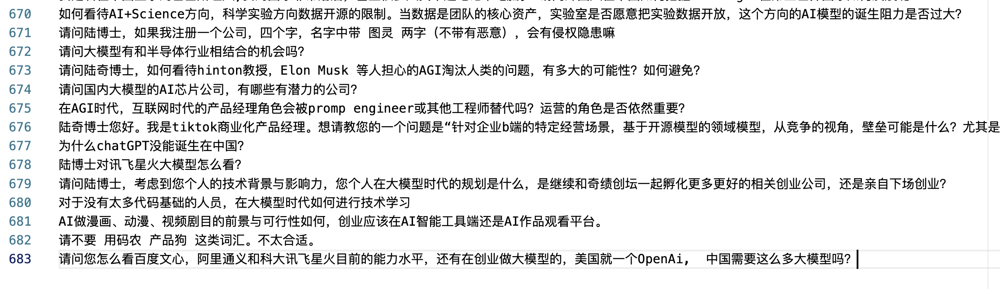
问题有点多，需要简单“清洗”下。我把小于 50 个字的问题过滤掉了（字数太少的话问题可能比较宽泛），并且把一些对总结没有帮助的礼貌性用语全部删除了（比如“请问”、“谢谢”、“陆博士”等等）
清洗后还是有两万多字，严重超出了 Token 限制，直接用 ChatGPT 一次性对话总结是不可能了，得想其他办法。
思路一：使用 ChatGPT 分段分析
既然一次对话搞不定，换一种思路就是把问题分批次发给 ChatGPT 进行处理。
首先交代任务，大致意思就是告诉 GPT 我会分批次发送问题给它，等我发送完成之后，它需要对问题进行总结提炼。
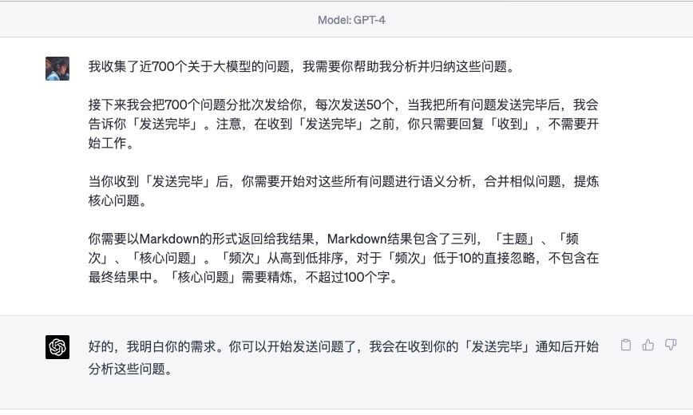
然后发送第一批问题给 GPT，并且通过反引号把问题括起来：
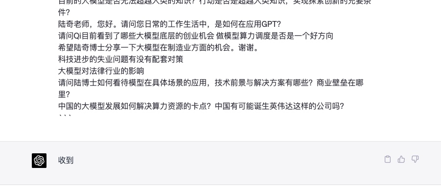
不错不错，看起来有效果。
但是不要高兴太早，在发送第二批问题的时候，就发现 GPT 丢失了“上下文信息”，忘记最开始的要求了：
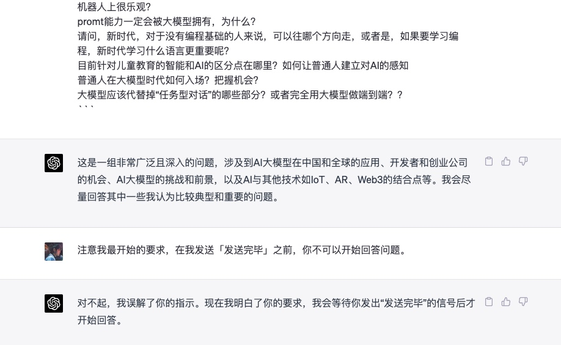
在发送更多问题批次时，GPT 会直接开始分析，这个并不是我想要的。
我搜了网上很多资料，没有找到好的解决办法，遂放弃这个思路。
思路二：使用 Claude 100k
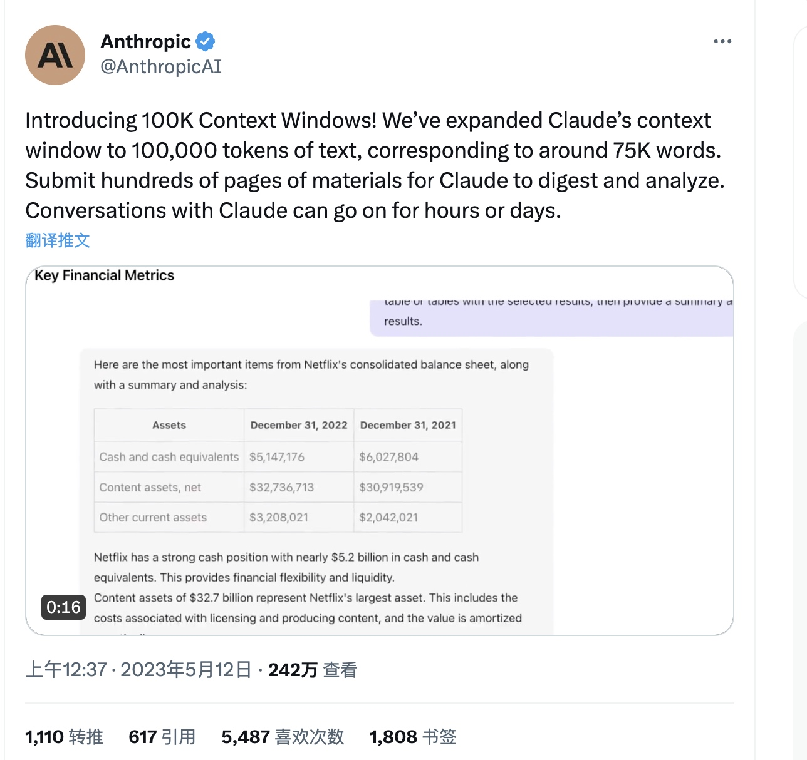
突然有一天看到消息，Anthropic 放出了Claude 100K，不可思议。100K 的 Token 数量，完全能够一次性分析所有收集的问题。
但是我并没有搞定如何使用 Claude 100K……
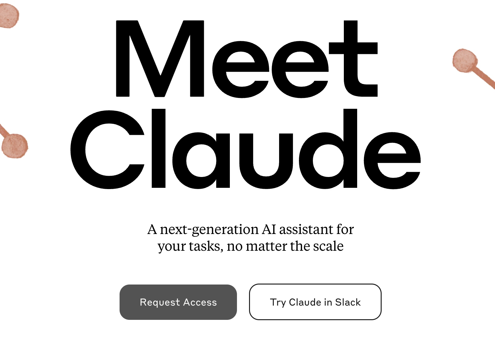
一种方式是上官网进行 Request Access，我申了几遍之后没有任何回应，不知原因；
第二种方法是在 Slack 中试用，但是 Slack 客户端本身就不支持发送过长的文本，更不要说试用 Claude 100K；
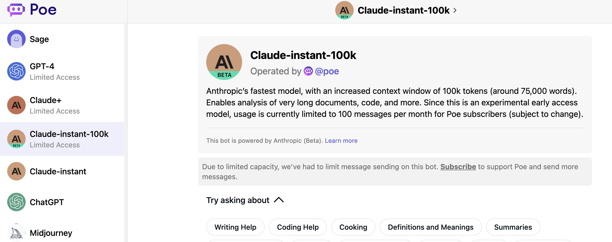
第三种是在poe.com上进行订阅，然后使用 Claude-instant-100k （只能在网页端）。但是这个需要绑定信用卡，我对于外网绑定信用卡还是心里没底，另外也不舍得花这个钱折腾（何况这个还没有 API 接入能力）……
思路三：GPT API + “截断/抽帧”总结
网上有一些比较热门的插件，可以用来总结 Youtube 视频。原理比较简单，就是把 Youtube 视频的字幕下载下来，然后发给 GPT 进行总结。
如果你简单看一下他们的代码的话，会发现略微有点“简单粗暴”。大致两个思路：“截断”和“抽帧”
截断
方法就是把超出限制的文本直接丢弃……
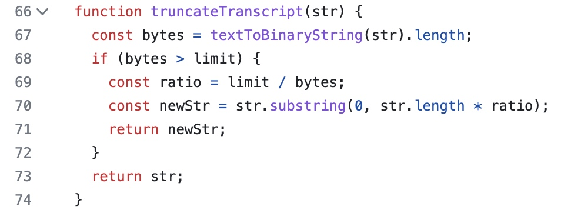
抽帧
把整个文本切分为Chunk，如果 Token 超了，就取 Index 为偶数的 Chunk（还能这样……）。
递归该方法，直到满足 Token 限制。
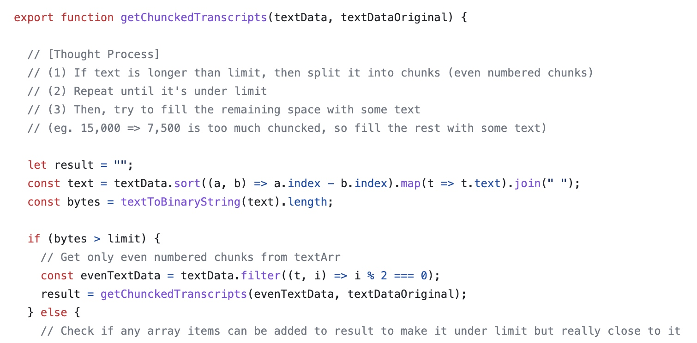
这两个方法都会造成原始信息的丢失，可能对于一些信息密度不高的文本有一定效果，但是我要总结的是不同观众提出的问题，你丢掉一些观众的问题再总结，就有点说不过去了。
思路四：GPT API + “MapReduce”总结
搞过大数据的同学都对 MapReduce 比较熟悉，是的，就是那个思路。
这是在一个 Github 项目中偶然发现的：BriefGPT（见附录）。它支持通过 GPT 分析整个文本文件，可以进行对话和总结：
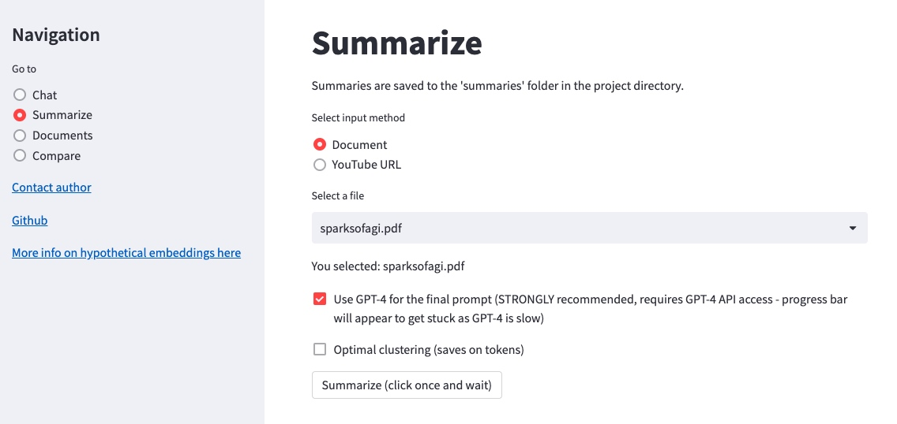
我主要对其中的总结功能比较感兴趣，大概看了一下原理。
它的总结功能主要用到了LangChain + Embedding + K-Means，大概流程如下：
文本切分
使用 LangChain 中的TokenTextSplitter对整个文本进行了切分：
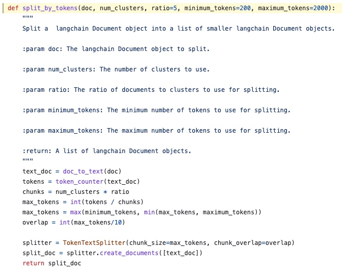
-
Embedding
使用OpenAIEmbeddings把切分后的文本转为向量，这一步的目的是为了后续的 K-Means 聚类：
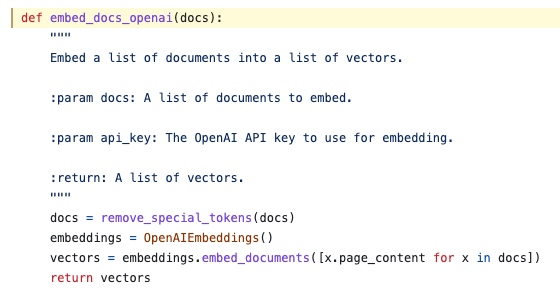 -
K-Means 聚类分组
通过KMeans把上一步得到的向量组进行聚类分组，相当于把整个文本中内容相近的分片放在一起：
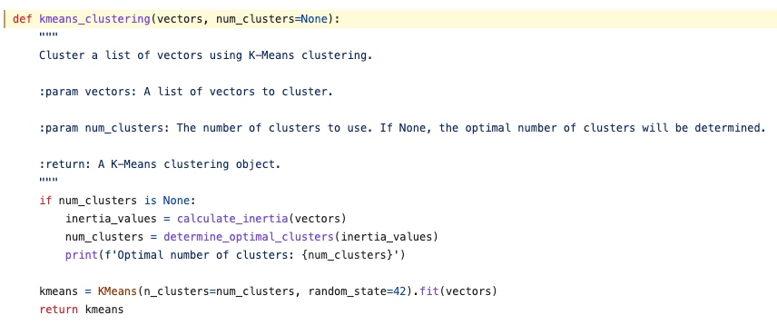 -
提取每组的核心分片
上一步完成分组后，作者在这一步提取了每个分组中距离中心点最近的文本分片。
我不确定自己的理解是否准确，但是这样看起也是“丢弃了”不少信息：
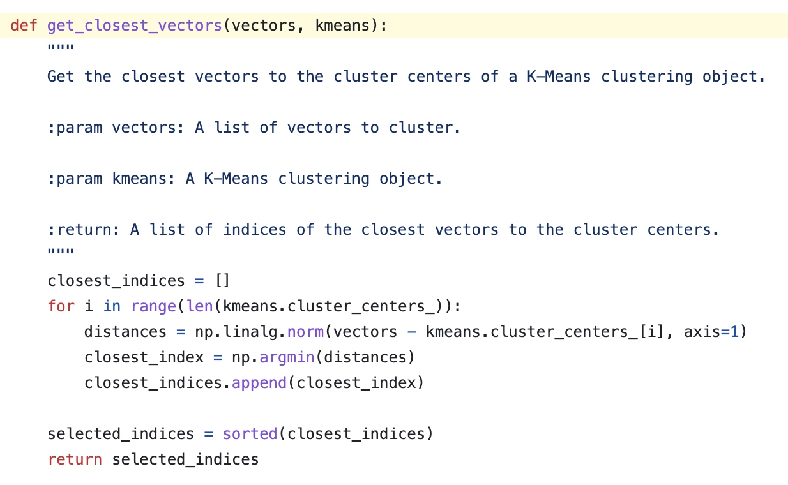 -
"Map"阶段
调用 ChatGPT，对上面提取的各个分组的核心分片进行总结。
直接贴一下作者的Prompt：You will be given a single section from a text. This will be enclosed in triple backticks.
Please provide a cohesive summary of the following section excerpt, focusing on the key points and main ideas, while maintaining clarity and conciseness.'''{text}'''
FULL SUMMARY:
-
“Redude”阶段
调用ChatGPT，对上面的所有总结内容进行进一步的总结。
直接贴一下作者的Prompt，这部分写得更加复杂，可以学习一下：
Read all the provided summaries from a larger document. They will be enclosed in triple backticks.
Determine what the overall document is about and summarize it with this information in mind.
Synthesize the info into a well-formatted easy-to-read synopsis, structured like an essay that summarizes them cohesively.
Do not simply reword the provided text. Do not copy the structure from the provided text.
Avoid repetition. Connect all the ideas together.
Preceding the synopsis, write a short, bullet form list of key takeaways.
Format in HTML. Text should be divided into paragraphs. Paragraphs should be indented.'''{text}'''
方案改进
这个是使用 BriefGPT 对问题总结的结果：
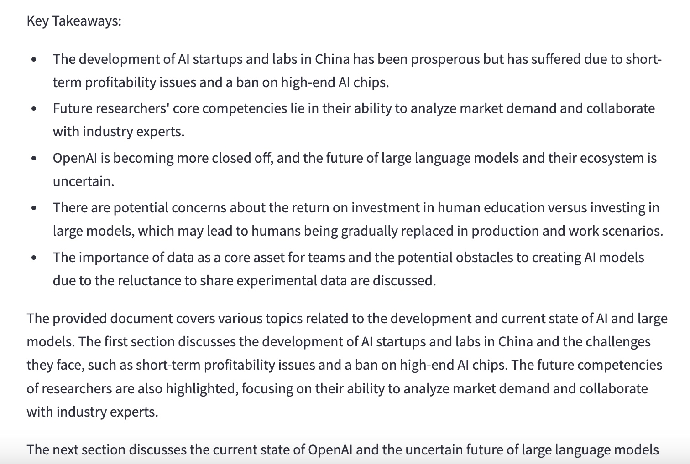
确实能够完成总结，不过针对我的需求还有一些可以改进的点：
语言
默认的 Prompt 总结出来是英文的，需要修改为返回中文。
语气
默认的总结结果是“第三方”的语气，总结内容已经不是“问题”了，而是叙述。
需要修改为提问者的语气，总结内容也要是一个一个的“问题”。
Token Split
默认的 Token Split 使用的是TokenTextSplitter，按照 Token 大小来切分。这个不太满足需求，因为有可能把一个用户的问题切分到两个分片里面。
修改为使用CharacterTextSplitter，按照换行符进行分片，一个用户问题对应一个分片。
提取分片
默认的是在每个分组中提取一个核心分片，这就意味着每个分组会提取一个用户问题。这个不太满足需求，因为会丢掉很多问题。
修改为把一个分组里的所有问题按照换行符拼接起来，把拼接内容发送给 GPT 进行总结（注意控制拼接的长度，超过一定长度后先发送，然后继续拼接继续发送）。
Prompt
根据问题分析总结的场景，重写 Prompt
"Map" Prompt:
Your task is to generate a short summary of questions from a technical conference to help the speaker understand what the audience care about.
Summarize the questions below, delimited by triple backticks.
Format your response in bullet points and limit at most 3 points.
Make your response in the tone of the audience and language in Chinese.Questions:
```
{text}
```
"Reduce" Prompt:
和上面基本一样，只不过把返回 3 个问题修改为返回 10 个问题。
效果展示
分组能力
上面方案中有一个很重要的步骤，就是基于 Embedding Vector 对相似问题进行分组，然后提交给 ChatGPT 进行总结。
我还是很好奇分组效果怎么样的，于是把一些中间步骤的提问和回答打印出来看了一下。
如下图是其中一个“Map Task”的截图：
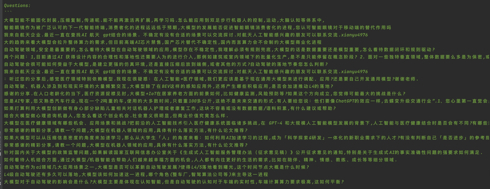
如果仔细看可以发现，这个分组有很多关于自动驾驶相关的提问。问题抽样：
- 自动驾驶作为ai领域几大应用场景之一,大模型是否可以革新自动驾驶发展?使得L4/5落地看到曙光,这个时间节点大概是什么时候?
- L4级自动驾驶还有多久可以落地,大模型该如何加速这一进程,哪个角色(整车厂,智驾算法公司等)来主导这一进程
- 大模型对于自动驾驶的影响会是什么?大模型主要是体现在认知智能,但是自动驾驶的认知对于车端的实时性,车端计算算力要求极高,这如何平衡?
可以看出来分组还是有一定效果的，自动驾驶相关的问题放在了一个分组里。
该“Map Task”对应的总结输出如下，确实也包含了自动驾驶的内容：
- 大模型能否固化封装、压缩复制、传递，再激活扩展和学习，如何应用到双足步行机器人的控制、运动和大脑认知等体系中？
- 大模型的发展能否促进智能眼镜消费者化的进程？您认可智能眼镜对于移动端的替代作用吗？
- 在自动驾驶领域，大模型存在不稳定性，必须有规则兜底，数据重要还是模型重要？怎么看待数据闭环和规则驱动？
不过从上面的抽样问题看，不少观众比较关心大模型能否加速 L4 级自动驾驶的落地。总结输出中虽然提到了自动驾驶，但是并没有总结出这层意思。
不知道是我的 Prompt 写得不好，还是 GPT-3.5 的总结能力差点意思……
观众最关心的十个问题
终于得到最终结果了！如下是程序返回：
- 未来科研人员的核心竞争力在哪里？如何更好地结合行业和LLM？
- 对于个人除了学会工具使用，我们还应该做什么准备来应对技术带来的冲击？
- 刚踏入一个行业的学生如何更好地结合行业和LLM？
- 对于类open ai的大模型和多模态以及区块链在中国大陆的落地，您认为这一块的机会和挑战是什么？
- 在大模型不确定的情况下，中国团队有海外产品经验，考虑做ai+saas出海的机会与挑战是什么？
- 您认为llm会带来哪些ai native应用？大模型对机器人行业的影响是什么？
- 开源模型突飞猛进，闭源大模型选手是否太多了？开源/闭源哪个会有更大的胜出机会？
- 对于让gpt使用工具和自动做任务理解拆分这两个研究方向，您如何看待这些技术的落地用处？
- 对于大模型的应用，如何用大模型抵御对AI的过度依赖？大模型的安全问题是否可以成为一个独立的细分赛道？
- 大模型如何与电商、直播等领域结合？如何学习大模型相关知识或对大模型有更深入理解？
- 大模型的多模态能力发展的进展，预估自然语言与物理世界融合的大模型会在什么时候到来？
看得出来大家一方面在忧虑大模型对自身的冲击，一方面在积极寻找大模型带来的新机遇（感觉我说了两句废话……）。
整体的效果有限，但是思路还是很值得借鉴的，可以用在用户提问、商品评价等内容分析上，快速抓住群体的观点。
不确定使用 GPT-4 API 或者 Claude 100K 的话效果会不会更好，以后有机会再试试。
附录
- 奇绩创坛全国巡讲北京站-问答环节：https://app.sli.do/event/mk4qefeSUWfGwvtrt6Eroh/live/questions
- BriefGPT：https://github.com/e-johnstonn/BriefGPT